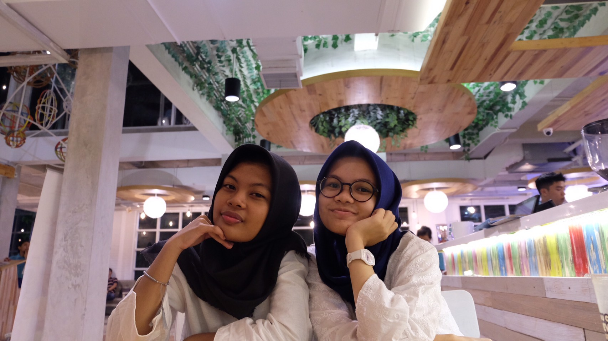
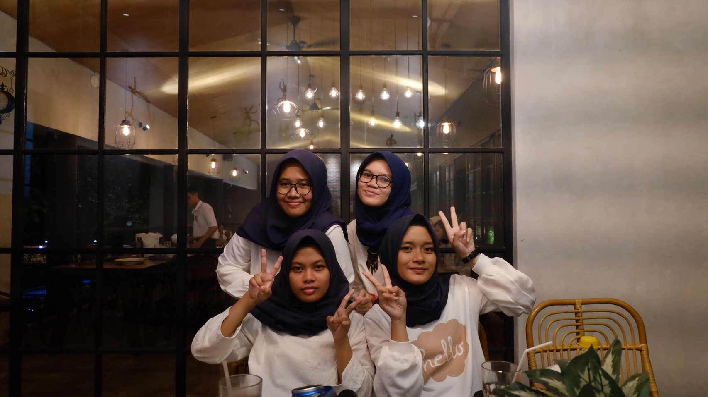
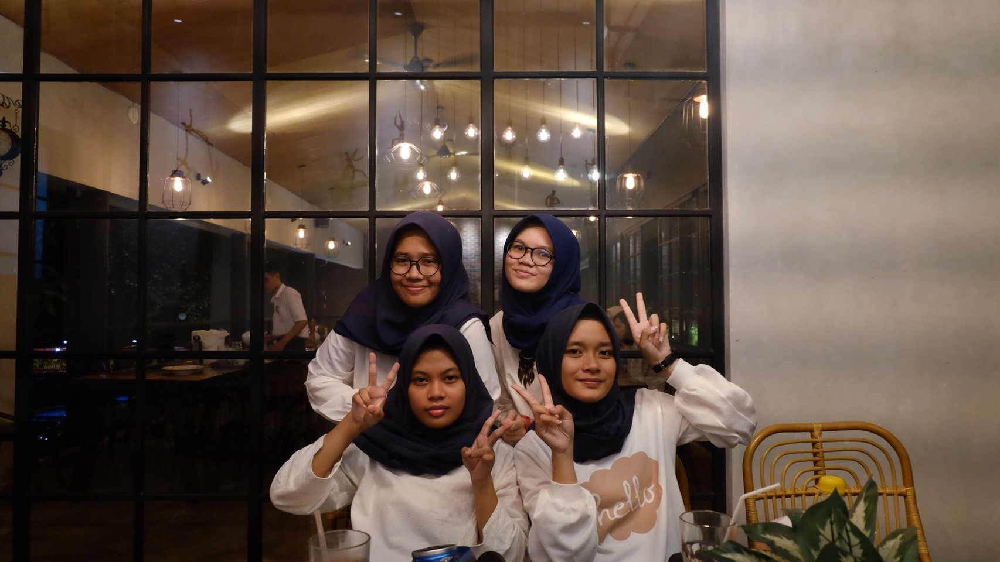

It's Me
About Me
HOLA!! Saya adalah seorang gadis berkacamata bernama Tiara Nabilah Dinanti. Orang-orang biasa memanggil saya Tiara atau T karena nama saya berawalan huruf "T". Saya berumur 16 tahun dan lahir pada 28 Maret 2001. Saya adalah anak tunggal dan tidak mempunyai saudara kandung. Tempat tinggal saya sekarang berada di Bogor bersama orang tua saya.
Karena saya bersekolah di jurusan Analisis Kimia, cita-cita saya adalah menjadi analis yang baik, jujur, kompeten, dan berguna untuk semua orang.
Saat ini, saya bersekolah Di SMK-SMAK Bogor. Riwayat pendidikan saya dari kecil adalah:
- TK Al-Ghazali Bogor
- SDN Pengadilan 3 Bogor
- SMP 5 Bogor
My Hobbies
Membaca
Salah satu hobi saya adalah membaca. Saya suka membaca karena membaca merupakan jendela dunia. Saya suka membaca buku apa saya, tapi saya lebih suka membaca novel terutama dengan ganre fantasy atau sci-fi seperti Harry Potter atau The Hunger Games.Travelling
Hobi saya yang lain adalah travelling. Biasanya, saya travelling bersama teman-teman atau keluarga. Travelling dapat menyegarkan otak dan pikiran saya yang lelah karena pelajaran-pelajaran sulit yang saya temukan disekolah seperti Kimia Organik, Kimia Fisika, atau Fisika. Namun sayangnya karena masih pelajar, saya kesulitan untuk mengatur uang dan waktu untuk travelling.Makan
Saya juga suka makan, khususnya makan-makan bersama teman atau keluarga. Makan bersama keluarga atau teman akan mengeratkan tali persaudaraan serta membuat hubungan satu sama lain semakin erat dan kuat. Saya menyukai makanan pedas dan asam.My Gallery

 
